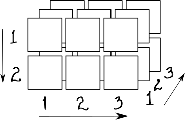
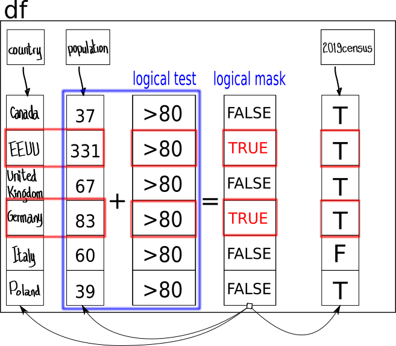

Basic Instructions
Start in order with every topic as they appear on the left panel. A bar on the left of each title will indicate that you have completed it. In addition to presenting explanations, code examples and code exercises, some sections may contain a quiz to test your understanding of the material. Completing a section means, having clicked through all the subsections, ran all the code exercises, or having answered all the questions.
As you work through each section, press the Continue button at the botton of the screen after covering each subsection. New subsections will appear until you reach the end of the section. The tutorial will not block you if you skip the exercises and you can also click on the next section on the left panel at any time. It is in your best interest that you go through them all, however life can get busy or you may be just reviewing a specific item, so feel free to browse at your pace. Just be warned, the material will make more sense if covered in sequential order the first time.
If you want to reset the state of your answers and the code you’ve run on the exercises, erasing all of your previous history, press the Start Over option at the bottom left on the main panel. If you are following this material on a browser, reopening the page after having closed it will continue the previous session so you will maintain all of your answers up to the point where you last worked on it.
Let’s get started.
Learning outcomes
This introduction to R syntax will allow you to become familiar with the following concepts:
- Using mathematical and logical operators
- Build complex expressions using operators
- How to get documentation about R at the command line
- How to create variable to store values
- How to call built-in R functions
- How to get a list of all predefined functions in a package
R can be easily used to carry out accurate and expressive statistical analysis, complex data processing, classical statistical modelling, machine learning, distributed big data processing in clusters, data visualization, and many other tasks.
Your continued use and application of the language will strengthen your command of the syntax and of the multiple packages freely available. This practice will make you a very productive R specialist.
R as a calculator
R has a console to interact with it. Let’s use it as a calculator to add two numbers.
Here is an example of a line of code to add two plus two and the resulting output:
2 + 2## [1] 4Note the output, there is a [1] and the result of the calculation. We will address the meaning of the number between square brackets when discussing Vectors. For now pretend it tells you the position of the single answer provided: a [1] indicates that the number 4 is the first value in the answer.
Mathematical operators in R
Please try running the following lines of code representing mathematical operations.
450 - 100
3 * 10
35 / 7
5^2Each result appears on its own line after running the code. This is the same behaviour you would see on a command line if you entererd the four lines of code.
Operator precedence
Operators that act on a single value are unary while those that receive two arguments are binary. The execution order of an expression containing several operators follows the rules of operator precedence that give more or less priority to some operators over others. Compare the following two lines:
1 + 5 * 5
(1 + 5) * 5Multiplication takes precendence over addition when the first line is evaluated. The use of parenthesis forces the addition to be carried out before the final multiplication by 5 on the second line.
From the R help here is a list of all the unary and binary operators and their precedence from highest to lowest from top to bottom and from left to right within groups:
| operator_groups | description |
|---|---|
| :: ::: | access variables in a namespace |
| $ @ | component / slot extraction |
| [ [[ | indexing |
| ^ | exponentiation (right to left) |
| - + | unary minus and plus |
| : | sequence operator |
| %any% | special operators (including %% and %/%) |
| * / | multiply, divide |
| + - | (binary) add, subtract |
| < > <= >= == != | ordering and comparison |
| ! | negation |
| & && | and |
| | || | or |
| ~ | as in formulae |
| -> ->> | rightwards assignment |
| <- <<- | assignment (right to left) |
| = | assignment (right to left) |
| ? | help (unary and binary) |
You can get documentation like this from the R help at the comamnd line by typing ?Syntax or help("Syntax"), a full set of help functions appears on the table below.
| long_form | short_form | description |
|---|---|---|
| help.start() | General help system | |
| help(“funABC”) | ?funABC | Help on function “funABC” (quotations optional) |
| help.search(“funABC”) | ??funABC | Searches help for string “funABC” |
| example(“funABC”) | Finds examples for “funABC” | |
| RSiteSearch() | Opens a browser search for “funABC” on R online manuals and archived mailing lists | |
| apropos(“funABC”, mode = “function”) | List of all avaliable functions with “funABC” in their name | |
| data() | List all data sets in loaded packages | |
| vignette() | List vignettes for currently installed packages | |
| vignette(“ABC”) | Displays content of vignette for package “ABC” |
Storing values in variables
It’s a good idea to store results in variables so we can keep them around to use them in other expressions.
# store a value
a <- 10
# store the result of an operation
b <- a + 10
# print the contents 'a' and 'b' one on separate lines
a
bThe <- binary operator indicates assignment. The value on the right is assigned to the variable on the left. After line 1 is executed by R the variable a stores the value 10 so when the second line is executed b is assigned he result of applying the operator + to the value 10 and the value of the variable a. As a result of all this b will be assigned the value 20.
Built-in functions
R offers predefined functions. These may take arguments and return computed values when executed. Some expressions may take a function with arguments and store the returned value for storage in a variable. Let’s look at the result of running the following lines:
# assign the result of the function call to the variable 'e'
e <- exp(1)
# print the contents fo 'e' to the output
eThe first line executes the expression on the right of the assignment operator, itself a function call to exp() with argument 1 and assignes the returned value to the variable e. The second line prints the value stored in e as 2.718282.
Try running the line 1 by itself below.
e <- exp(1)There should be no output. The value of the function exp with the argument 1 was computed and stored in the variable e. The assignment operation leaves no trace on the output. Another way of saying this is the assignment operator produces no side efects in the console. Its only effect is to create a name-value pair, (e, 2.718282) in the global environment, so the value can be recalled later by its assigned name.
Note: As it is usually the case in R, there is a way to get more millage out of your code. You can get a two-for-one effect by printing and doing assignment in a single expression on the console by surrounding the assignment with parenthesis. Try it!
# this accomplishes the assignment and prints the value of the variable in one line
(e <- exp(1))Other built-in functions
To compute logarithms, R offers the following predefined functions:
log(x, base = exp(1))
logb(x, base = exp(1))
log10(x)
log2(x)
log1p(x)To see all the predefined functions available in the base package type library(help = "base) at the command line.
library(help = "base")The assignment operators and their uses
Experiment now to compute logarithms in base 10 and natural logarithms (base e). Try to answer the following:
- What is the logarithm of 10 in base 10?
- What is the natural logarithm of e?
- What is the logarithm of 512 in base 2?
Try using the two variables already predefined in the first two lines. Add as many lines of code as you need to experiment.
a <- 10
e = exp(1)
print(paste0("a = ", a, "; e = ", round( x = e, digits = 4)))
# logarithm of 10 in base 10
# natural logarithm of e
# binary logarithm of 512log10(a)
log(e, base = e)From the previous exercise you might have noticed that the operators <- and = behave identically in stand alone expressions. Technically speaking, their effect is to create name-value pairs for each variable, (a, 10) and (e, 2.7183), in the global environment.
So, you might ask: why are there two aperators to do the same in R? Read on for the answer.
Function arguments: positional and named
R functions may be built-in or user created, they may have also none, one, or more arguments. The arguments are given in between parenthesis, separated by commas, and they may be named or not. An example of a named parameter to a function is base in the log function: log(x, base = exp(1)). Examine the code below and guess the output before running it, did you expect the result?
three <- log(1000, base = 10)
# Does 'base' exist in the global environment after log gest evaluated?
# let's check it out and print a nice message accordingly
if (exists("base")) {
print(paste0("base exists outside of log, base = ", base))
} else {
print("base does not exist outside of log")
}In the call to the function log, the first argument is positional, taking exactly the position number one. The second argument is named and may receive a value via the = operator if the function requires it during its execution.
If the function is called without a second argument, and base is used for computation inside the function, the assignment operator will use the value resulting from evaluating the experession exp(1) and associate it with base. This is how a default value for a named argument can be given.
If the user prefers to pass a different value from the default then the named argument can be given as in log(10, base = 10) or just log(10, 10).
# use the name for the second argument
log(1000, base = 10)
# use only a value for the second argument, still ok!
log(1000, 10)Now compare the flexibility of using the explicit name assignment.
# the first argument is now a named argument so the second gets position one instead
log(base = 10, 1000)
# in absence of hints x = 10 (position one) and base = 1000 (named)
log(10, 1000)More on variable assignment
We already saw how the = operator for a named argument does not affect the global environment where the function is created. Variable assignment is like creating a pair (variable-name, expression) that lives in a scope where it can be reached for further evaluation.
We could use the <- operator for the named argument, the expression log(x, base <- exp(1)) would assign the expression exp(1) to the local variable base. However, before that gets done, the name-expression pair gets created in the global environment. That implies that there will be a global variable base with the value of evaluating exp(1) outside of the function log after exiting log. Let’s test that.
log(1000, base <- 10)
# Does 'base' exist in the global environment after log gest evaluated?
if (exists("base")) {
print(paste0("base exists outside of log, base = ", base))
} else {
print("base does not exist outside of log")
}If we use the global assignment operator <- in the first position it might have an unexpected result compared to using the local assignemnt operator =. Check for yourself with the code below.
log(base <- 10, 1000)Did you get the same result of using log(base = 10, 1000)? That is almost true, the difference is that now there is a variable assignment represented by the pair (base, 10) that outlives the call to log.
In summary, to avoid ambiguities and unplanned side effects, when assigning values to variables use <- for stand-alone expressions and = for function named parameters. On the next section there are a few exercises to solidifiy these concepts.
Test your understanding
Data Representation in R
Every computing language uses a model to represent information in memory and R is no exception. Everything in R is an object with a default constructor. These objects adopt the form of data structures to hold values that have data types. We will cover these definitions and woork with them in this section.
Data Types
The fundamental values that R can represent and manipulate int he computer memory are:
- integer
- double (also called numeric)
- character
- logical
There are two less commonly used: complex and raw that we will leave for another time.
Data Structures
There are two types of data structures according to what data types they can store: homogeneous and heterogeneous. They can also be categorized according to the dimensions they can store: 1d, 2d or nd. This produces the following double entry table.
| Homogeneous | Heterogeneous | |
|---|---|---|
| 1d | Atomic vector | List |
| 2d | Matrix | Data frame |
| nd | Array |
Vectors
The table we just saw should be read as follows: all one-dimensional data structures that contain objects of the same type are vectors, as in they are stored in contiguous memory. A vector of six integer values would be represented graphically as:
And as code:
c(5, -1, 3, 0, -4, 1)## [1] 5 -1 3 0 -4 1A vector is constructed with the function c() that takes a variable number of arguments. Once a vector has been constructed and assigned to a variable x its elements can be extracted with the subsetting operator [] like x[1] to subset the vector so it returns a vector with the first element only.
Try to answer the questions with your code.
x <- c(5, -1, 3, 0, -4, 1)
# extract the third element of x
# subtract the first element from the last and print the result
# compute the length of x
# compute the difference between the last and first elements using the lengthx[3]
x[6] - x[1]
length(x)
x[length(x)] - x[1]Constructing vectors
Creating vectors can become a tedious task so there are a number of techniques to lighten this burden. When we can or need to use patterns to create them the functions rep() and seq() can be pretty helpful. Study the output of these functions.
rep(-1, times = 10)## [1] -1 -1 -1 -1 -1 -1 -1 -1 -1 -1seq(1, 100, by = 5)## [1] 1 6 11 16 21 26 31 36 41 46 51 56 61 66 71 76 81 86 91 96rep and seq can be combined to composed colorful patterns.
# repeat the sequence of digits twice
rep(seq(1,9), times = 2)
# repeat the sequence of digits two at a time
rep(seq(1:9), each = 2)Remember a vector must have elements of the same homogeneous type. So this is a valid vector of doubles:
c(2.3, -0.54, 1.01, 10.8)## [1] 2.30 -0.54 1.01 10.80And this one contains character strings:
c("Hello", "world", "in", "R!")## [1] "Hello" "world" "in" "R!"And finally here is a vector of logical symbols:
c(TRUE, T, 1, FALSE, F, 0)## [1] 1 1 1 0 0 0As you might have guessed, either FALSE, F, or 0 mean the same. Similarly TRUE, T, or 1 are synonymous. They are also called the boolean data type and can only have two values, each defined as the negation of the other. In R, like in other languages, you can add logical values as if they were zeros and ones.
is_a_positive <- rep(rep(c(F, F, T, F, F, F, F, T, T, F,F, F, F, T), each = 2), times = 7)
# how many TRUE values are there in is_a_positive?sum(is_a_positive)The binary operator : can be used with integer values as a short version of seq(to, from).
1:50## [1] 1 2 3 4 5 6 7 8 9 10 11 12 13 14 15 16 17 18 19 20 21 22 23 24 25
## [26] 26 27 28 29 30 31 32 33 34 35 36 37 38 39 40 41 42 43 44 45 46 47 48 49 50Note: the execution of the previous expression creates a vector of doubles from 1 to 50. At this point in our tutorial, with the output of this vector spreading over more than one line on the console, we can interpret the meaning of the numbers in square brackets on the left of the output. They indicate the position within the vector of the first value presented in that line of the output. Therefor the second line of output begins with the 26th element of the vector, which happens to be the number 26 in the sequence.
Subsetting vectors
Combining the binary operator : and the subsetting operator one can extract ranges of elements of a vector.
x <- c(5, -1, 3, 0, -4, 1)
# subset the range of elements from the third to the fifth one
x[3:5]## [1] 3 0 -4There are many interesting ways of sub-setting a vector using ranges. For example a negative value indicates the index is in the reverse order (starting from the tail instead of from the head).
x <- c(5, -1, 3, 0, -4, 1)
# subset the last element of the vector 'x'
# remove the last elementx[-1]
x[length(x)]Vectors within vectors
When a vector is created within another vector they are not nested, but rather they are concatenated in a linear fashion.
y <- 1:3
# try nesting y within a new vector and see what happens
c(0, y, 4)Appending elements to a vector
You cannot make nested structures with vectors. Incidentally this property becomes your way of appending elements to either end of a vector as we just did to the vector y above. However using the function append does a cleaner job because it keeps the original attributes of the vector like names, if there were any. Try it below.
y <- letters[1:5]
names(y) <- c("c1","c2", "c3","c4","c5")
y# now add ther sixth letter of the ascii character set
y_extended <- append(y, letters[6])
# check the new vector, are the first five names preserved?
y_extendedAppend the 24th lower case letter of the ascii character set to the beginning of the following vector, what do you read?
y <- letters[c(15, 24, 15)]
# append the 24th letter to the head of 'y'
# don't modify the following line
paste0(y, collapse = "")y <- append(letters[24], y)An eye-opener to type cohersion in R
We can aske vectors to tell us the type of values they carry with the function typeof. We can also ask if they have a specific type of value. Run this code and figure out what the vector of answers mean.
v_dbl <- c(0, 1, 3)
c(is.integer(v_dbl), is.numeric(v_dbl), is.double(v_dbl))
typeof(v_dbl)Can you explain why both is.numeric and is.double are TRUE. Woild a plain integer type be numeric? Read on to answer that question.
The characters that represent integers are automatically interpreted as doubles or numeric, the more general concept. In order to enforce their interpretation as integers (in case it is absolutely necessary) use L as a suffix on each number. Run the following and compare the results:
v_int <- c(0L, 1L, 3L)
c(is.integer(v_int), is.numeric(v_int), is.double(v_int))
typeof(v_int)In general R will try to coherce the elements of a vector to the most general type possible, usually character.
Vector attributes
Vectors can also be interrogated for their class and their attributes.
# a vector of four truth values
v <- c(T, T, F, T)
# the same as typeof for this object
class(v)## [1] "logical"# are there any attributes?
attributes(v)## NULLNow let’s create the vector with names. The names become an attribute of the vector object. Pay close attention to the results of running this code.
# a vector of four truth value for four logical propositions
v <- c(p1 = T, p2 = T, p3 = F, p4 = T)
# check the attributes of the object
attributes(v)## $names
## [1] "p1" "p2" "p3" "p4"There are three default attributes of a vector: names, class, and dimension. Each can be accessed via a specific function. Dimnesion has the NULL value by default for vectors, it will be different for matrices and arrays though.
v <- c(p1 = T, p2 = T, p3 = F, p4 = T)
names(v)## [1] "p1" "p2" "p3" "p4"class(v)## [1] "logical"dim(v)## NULLNames can be changed in place with the assignment operator. Run this code and compare the two vectors of names from v after creation and after the reassignment.
v <- c(p1 = T, p2 = T, p3 = F, p4 = T)
# check the original names
names(v)
# reassigned names
names(v) <- c("val1", "val2", "val3", "val4")
# new names
names(v)
# finally check the names of the vector with the summ of all the values
names(sum(v))Factors (More Advanced)
These are vectors that can only be populated with predefined values which correspond to categories or levels. For example the vector of musical genres for a sample of music titles from a playlist may be described by:
# The genres on an eclectic play list
music_sample <- c("Indie", "Electronic", "Country")
class(music_sample)## [1] "character"Now, what if we created a new type of vector that could only be populated with these genres, assuming that these are the only ones we will ever listen to.
# The genres on an eclectic play list
music_sample <- c("Indie", "Electronic", "Country")music_sample_2 <- factor(music_sample)
class(music_sample_2)## [1] "factor"Check out the levels available to populate the play list:
Adding a new element has to be done on the levels, the underlying vector.
levels(music_sample_2)
# add a new entry
music_sample_3 <- append(levels(music_sample_2), "Indie")
music_sample_3Why is this important? Let’s see an example of how to tally the number of elements in each category of a factor vector.
# build the factors for your play list, remember the convenient 'rep' function?
genres <- factor(c(rep("Indie", times = 5),
rep("Electronic", times = 9),
rep("Country", times = 27)))
# whoa, do I sense a certain trend here? let's check with R
table(genres)If you need to add a new level to the factor vector then there is a form of level assignment to do it, using simple vector linear concatenation with the c() function, remember ‘nesting vectors’?:
music_sample_genres <- factor(c("Country", "Indie", "Electronic", "Indie", "Country"))
# add a new level for newly discovered musical genre "Classical":
levels(music_sample_genres) <- c(levels(music_sample_genres), "Classical")
# now add a few entries, here we only add their genres
music_sample_genres <- append(levels(music_sample_genres), c("Classical", "Indie", "Indie"))
# see the tally
table(music_sample_genres)## music_sample_genres
## Classical Country Electronic Indie
## 2 1 1 3Matrices
Just like vectors are one-dimensional data structures that contain objects of the same type, matrices are their two-dimensional equivalents. A matrix of six integer values would be represented graphically as:
And as code:
matrix(c(5, -1, 3, 0, -4, 1), ncol = 3, nrow = 2, byrow = T)## [,1] [,2] [,3]
## [1,] 5 -1 3
## [2,] 0 -4 1A matrix is constructed with the function matrix() that takes vector with a variable number of arguments and a number of other parameters that inform the function how to construct the matrix from the vector.
Try to answer the questions with your code.
x <- matrix(c(5, -1, 3, 0, -4, 1), ncol = 3, nrow = 2, byrow = T)
# extract the element on the first row and thrid column of x
# subtract the first element from the frist row from the first element of the second row
# find the dimensions of x
# plot the contents of xx[1,3]
x[1,1] - x[1,2]
dim(x)
xIf the argument T had not been given to the named parameter byrow above R would have constructed the matrix on a column first order. Verify this for yourself:
y <- matrix(c(5, -1, 3, 0, -4, 1), ncol = 3, nrow = 2)
# extract the element on the first row and thrid column of x
y[1,3]
# subtract the first element from the frist row from the first element of the second row
y[1,1] - y[1,2]
# find the dimensions of x
dim(y)
# output the contents of yAs a task, find out how to name rows and columns in a matrix.
Useful matrix functions
There are very useful functions to deal with matrices. Let’s just mention a few here.
m <- matrix(c(5, -1, 3, 0, -4, 1), ncol = 3, nrow = 2, byrow = T)
# add each row
rowSums(m)
# add each column
colSums(m)Append a new row or column to the matrix.
m <- matrix(c(5, -1, 3, 0, -4, 1), ncol = 3, nrow = 2, byrow = T)# append a row with the number 6 to matrix 'm' from the previous exercise
rbind(m, c(6,6,6))
# append the new row at the top instead
rbind(c(6,6,6), m)# append a column with the number 6 to matrix 'm' from the previous exercise
cbind(m, c(6,6))
# append the new column at the beginning instead
cbind(c(6,6), m)Arrays
Arrays are the natural extension of vector and matrices to n-dimensions. 
The image illustrates a three-dimensional array with rows, columns, and frames. These data structures are very useful for tensor analysis and in particular for deep learning.
array(1:18, dim = c(2, 3, 3))## , , 1
##
## [,1] [,2] [,3]
## [1,] 1 3 5
## [2,] 2 4 6
##
## , , 2
##
## [,1] [,2] [,3]
## [1,] 7 9 11
## [2,] 8 10 12
##
## , , 3
##
## [,1] [,2] [,3]
## [1,] 13 15 17
## [2,] 14 16 18Here we created a tensor of 2 rows by 3 columns by 3 frames with the numbers 1 to 18. Study the output to verify this.
Let’s leave this data structure for deep learning practice and move on now.
Lists
Lists are one-dimensional data structures that can store information of heterogenious type. R’s well-known linear model object, with constructor lm(), is a list. Let’s creat a list with the general constructor.
Here is a graphical representation of a list with three components.
And here is your turn to create it in R code. Try to complete the exercise before looking at the hint.
l <- list(some_strings = c("hello", "world"),
some_numbers = 10:15,
some_booleans = c(T,T,T,F))
# check the names
# extract the first element of the listattributes(l)
names(l)
l[[1]]Lists can be nested
Try the following simple code to make sure you grasp the concept. This will become very important to do amazing data analysis later. Lists are very versatile that way.
Would would have thought that R would come in handy for that party you are planning for friends and family. The list of items for the party can be nested within the list of party items, how convenient!
# get organized for that party you are throwing for friends and family
party_items = list( drinks = c("pop", "wine", "beer", "water"),
furniture = c(chairs = 8, tables = 2, hammocks = 1))
to_do_list <- list(guests = c("Uncle Bob", "Friendly neighbour", "Joe Best"),
invited = c(F,F,T),
items = party_items)
# extract the party items and display the drinks to buyto_do_list[[3]][[1]]Another way to reference list elemenst by name uses the $ operator.
party_items = list( drinks = c("pop", "wine", "beer", "water"),
furniture = c(chairs = 8, tables = 2, hammocks = 1))
to_do_list <- list(guests = c("Uncle Bob", "Friendly neighbour", "Joe Best"),
invited = c(F,F,T),
items = party_items)Check out the use of the $ operator to extract the elemenst by name and printing the drinks for the party.
to_buy <- to_do_list$items
to_buy$drinksTest your knowledge
Dataframes
If you have followed the data structure section then this section should be relatively easy. Like a list, data frames store information of heterogenous type, however there are some rules.
- Two dimensional only, like a table.
- Any number of rows or columns
- The columns have to be of the same type
Follow these rules and dataframes are an almost ideal data structure to manipulate data for data analysis. There are other more suitable data structures for long term data storage of multidimensional nature but R does not deal with that problem, a data base might be more suitable for this or specilaized data wearehousing applications.
Dataframes are similar to tables of a sophisticated relational data base, where you can store procedures and even other tables in the cells.
Under the hood a data frame ios implemented as a list of vectors of the same length.

Let’s create this data frame using code using the constructor function data.frame.
# for better documentation name the vectors
country <- c("Canada", "EEUU", "United Kingdom", "Germany", "Italy", "Poland")
population <- c(37, 331, 67, 83, 60, 39)
census2019 <- c(T,T,T,T,F,T)
# the dot in names means nothing special in R, see note below for explanation
df <- data.frame(country,
population,
census2019)
# Display the data frame
dfNote: In R the dot for names has no special meaning, it is like _. The dot for formulas and in generic object dispatch has special meaning, bit those are topics for later.
If any of the vectors has a different length there will be error messages, R will not be happy about it. Try it for yourself in the previous exercise.
Subsetting a dataframe
Similarly to subsetting vectors, we can slice and extract sections of the dataframe as we please following the row, column convention.
# get the country names
df$countryLet’s extract all the information for Canada.
df[df$country == "Canada",]We can extract the countries with population greater than 80 million.
# extract only the names of the counties in the rows filtered
df[df$population > 80, 'country']
# display all the columns for the rows filtered
df[df$population > 80,]This way of subsetting a dataframe uses what is called a logical mask. This is nothing more than a boolean vector used for subsetting into another vector (recall that the columns of a dataframe are vectors). This is similar to what we have studied before.
This image helps explain it.

And here is a step by step description:
# build the logical mask with a vector of logical values
filter <- df$population > 80
filter## [1] FALSE TRUE FALSE TRUE FALSE FALSENow subset the dataframe by rows using this logical mask. A TRUE at a given position on the mask will let the value at that position on each row of the dataframe pass as is. Conversely, a FALSE will eliminate it so it does not appear on the result.
# apply the same filter to every column of the data frame by
result <- df[filter,]
resultNow only show the column for country and wheather the data is from the 2019 census:
# apply the filter to all the vectors of the data frame
result[c("country", "population")]Factors or strings
Did you notice that in the previous section we got the countries as a vector of factors with 6 levels. Remember that section on factors when we studied vectors? Well here we go again.
When you construct a dataframe from vectors their class will be interpreted by the constructor. Remember R will try to coerce all the elements of the vector to the lowest common denominator to be able to work with them.
You can give R hints, though, for instance you can tell it to interpret the strings in vectors as factors or not, base R will do it by default.
country <- c("Canada", "EEUU", "United Kingdom", "Germany", "Italy", "Poland")
population <- c(37, 331, 67, 83, 60, 39)
# strings as factors is the default
country_stats <- data.frame( country,
population)
# the function 'str()' tells us the structure of the object
str(country_stats)## 'data.frame': 6 obs. of 2 variables:
## $ country : Factor w/ 6 levels "Canada","EEUU",..: 1 2 6 3 4 5
## $ population: num 37 331 67 83 60 39The R constructor for dataframes interpreted the strings as 6 factors. Perhaps not what you expected, compare with this case.
country_stats <- data.frame( country, population, stringsAsFactors = FALSE)
str(country_stats)## 'data.frame': 6 obs. of 2 variables:
## $ country : chr "Canada" "EEUU" "United Kingdom" "Germany" ...
## $ population: num 37 331 67 83 60 39User functions
If you start writing a lot of R code, sooner or later you will find the need to reuse the same functionality over and over. Functions help you package that functionality in a single scope and reuse it in a convenient form.
A user function behaves like a built-in function, although their scopes (the environments where they live) are different.
The values that the function receives are called parameters in the definition of the function. The values actually passed to the function when called are called arguments.
In R the body of a function is written between curly braces and the last statement is the returned value.
Now write a function that adds any two numbers and then call it.
add2numbers <- function(a, b) {
}add2numbers <- function(a, b) {
return(a + b)
}References
Kabacoff, Robert. 2015. R in Action : Data Analysis and Graphics with R.
Wickham, Hadley. 2015. Advanced R. Chapman & Hall/Crc the R Series (Crc Press).